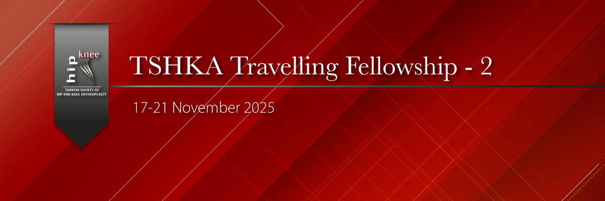

Dear Colleagues,
For Traveling Course-2, 6 specialists to be selected—3 in the Istanbul group and 3 in the Ankara group—will be able to join surgeries each day with our experienced mentors in hip and knee arthroplasty at the specified hospitals. By asking questions to the distinguished senior faculty they operate with, participants will exchange ideas on the topics they wish to learn and enhance their experience.
Course Application Requirements
Being a member of the Hip and Knee Arthroplasty Association
Having no outstanding membership dues, including the year of the course
Being under 35 years of age
Being an Orthopedics and Traumatology specialist for 5 years or less
Being motivated to engage in academic work and publications
Istanbul
Monday, November 17: Acıbadem Ataşehir Hospital. Prof. Dr. Burak Akan, Prof. Dr. Çağatay Uluçay
Tuesday, November 18: Medipol University Hospital. Prof. Dr. İbrahim Azboy
Wednesday, November 19: Acıbadem Maslak Hospital. Prof. Dr. Remzi Tözün, Prof. Dr. Javad Parvizi, Prof. Dr. İbrahim Tuncay, Prof. Dr. Vahit Emre Özden
Thursday, November 20: Haseki Training and Research Hospital. Prof. Dr. Doğan Atlıhan, Op. Dr. Şahan Dağlar
Friday, November 21: Bursa Medikabil Hospital. Prof. Dr. Ömer Faruk Bilgen, Op. Dr. Müren Mutlu
Ankara
Monday, November 17: Ankara University İbni Sina Hospital. Prof. Dr. Bülent Erdemli, Assoc. Prof. Dr. Hakan Kocaoğlu
Tuesday, November 18: Hacettepe University Hospital. Prof. Dr. Mazhar Tokgözoğlu, Prof. Dr. Bülent Atilla, Prof. Dr. Ömür Çağlar, Op. Dr. Gökhan Ayık
Wednesday, November 19: Bilkent City Hospital. Prof. Dr. Bülent Özkurt, Assoc. Prof. Dr. Ersin Çelen, Assoc. Prof. Dr. Olgun Bingöl
Thursday, November 20: Çankaya Hospital. Prof. Dr. Reha Tandoğan, Prof. Dr. Kerem Başarır, Op. Dr. Asım Kayaalp
Friday, November 21: Adana Acıbadem Ortopedia Hospital. Prof. Dr. Emre Toğrul, Prof. Dr. Yaman Sarpel, Assoc. Prof. Dr. Çağrı Örs, Spec. Dr. Remzi Çaylak
NOTE: It will be announced on our website on September 15.
Association President
Prof. Dr. İbrahim Tuncay
Course Chair
Prof. Dr. Doğan Atlıhan
Sincerely,
